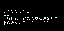
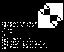

After designing the Kestrel 1 computer, I realized that building a more ambitious project would require resources that will be very costly. Therefore, it is imperative that I "get things right" before I plunk down my hard-earned cash. The cheapest way to build a computer is to not build a computer, but rather an emulator for it.
k2 is an emulator for the Kestrel 2. Its mission is not to be a general purpose emulator in the sense that VICE is; there is no precise 1:1 mapping with any hardware yet, for the hardware simply doesn't exist yet. Instead, k2 is a research vehicle, intended to let me get a feel for the real hardware as I (or others) conceive it. If there are things I (or you) don't like, I'm (you are) free to alter the emulator accordingly.
Once real hardware exists, then k2 may be retrofitted to better match the real-world hardware, at which point the feature set of the computer it emulates will be set in stone. Until then, explore!
| Date | Image |
|---|---|
| 2007 May 20 |  |
| 2007 May 20 |  |
At the time of this writing, due to the fact that work is still in progress, there is no distinct download for a single package. You'll need to use darcs to grab a copy of the repository.
darcs get http://www.falvotech.com/content/kestrel/2/emulator/repo
The emulator does not come with any ROM image files. You'll probably want to visit the Firmware page to grab a copy of my latest firmware build.
To build the software, you must first build the lib65816 software. lib65816 is the microprocessor emulator used by k2. Once that is built and installed, you should then be able to utilize SCons to build and install k2.
You must have a 32KiB file in your current directory called ROMFILE (case is sensitive for Unix-type OSes). This file is mapped to $008000-$00FFFF in the 65816's address space; hence, software contained in the ROMFILE can be considered the Kestrel's BIOS, bootstrap, or if it fits, the operating system.
Once this file exists, you can launch the emulator with k2. As I write this page, it takes no arguments (it's pretty dumb in that respect, but remember it's a code and hardware exploration tool, not an end-user product!).
As usual, if you want to contribute back, please feel free to use darcs to grab a local branch of the software, and make your changes there. When you're happy with your changes, please use this command:
darcs send http://www.falvotech.com/content/kestrel/2/emulator/
to send me the patches.
Not all patches will be accepted. If you're attempting to turn k2 into something that doesn't agree with my current vision for the project, I reserve the right to deny your patch. But that's OK -- you have a local copy, and I'd be happy to link to it for those who would be interested in what you've created from it.
I also reserve the right to modify patches that you send, so as to conform to my common code conventions. lib65816 is based on legacy software, so its programming conventions are not consistent. However, the remainder of the code in k2 ought to conform for consistency sake.
{kind=link}
{kind=link}